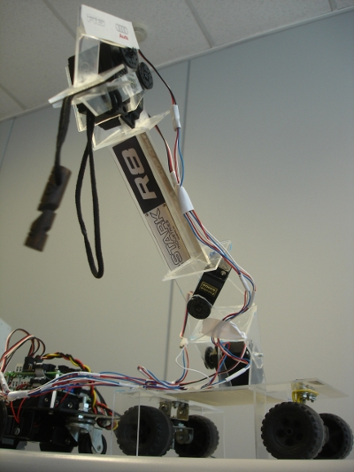

Este es el robot Stark-R8, diseñado por Jesús Marcos Morell y Gustavo Francisco Sanz, estudiantes en la Escuela Politécnica Superior de la UAM.
El robot está compuesto de dos partes. Un Skybot modificado al que le han unido un remolque que incorpora un brazo robótico de 4 articulaciones. Estas articulaciones han sido implementadas usando módulos Y1. Hasta ahora los módulos Y1 sólo se habÃa usado para construir robots de tipo gusano, pero Jesús y Gustavo han hecho el primer brazo articulado con ellos.
Aquà podéis ver un vÃdeo en youtube del robot en acción:
[youtube]http://www.youtube.com/watch?v=yfcv8QmOAWM[/youtube]
Gustavo me comenta que el nombre de Stark-R8 viene de Toni Stark, que es el ingeniero que ha fabricado IRONMAN y R8 por el Audi R8 😉
Muy interesante, un par de dudillas: el enfoque del proyecto está centrado en la mecánica y no en la inteligencia autónoma ¿me equivoco? lo pregunto porque desde mi ignorancia me parece difÃcil que un robot con esas cualidades haga eso de forma autónoma.
si es autónomo:
¿Hay algún tipo de cámara o aplicais algún tipo de algoritmo de visión para coger el bolÃgrafo?¿se hace algún cálculo de trayectoria y cinemática inversa teniendo en cuenta las dimensiones del bolÃgrafo y de la caja?
Saludos.
Hola Pablo!
La verdad es que desconozco los detalles del control. Tendrán que ser Jesus o Gustavo los que te respondan. Si no lo hacen en el blog, envÃame un correo y te paso sus direcciones de correo privadas para que se lo puedas preguntar.
Saludos, Juan
En efecto Pablo, nuestro proyecto está enfocado desde el humilde punto de la mecánica, nosotros mismos construimos las piezas que forman el brazo y lo manejamos desde el teclado de un ordenador. Actualmente nos encontramos en fase de desarrollo para controlar, tanto los grados de libertad del brazo, como la locomoción de todo el robot mediante un mando de la Wii y la tabla Wii Board, ya os contaremos que tal han salido los resultados.
Para cualquier otra duda aquà estamos,
Salu2